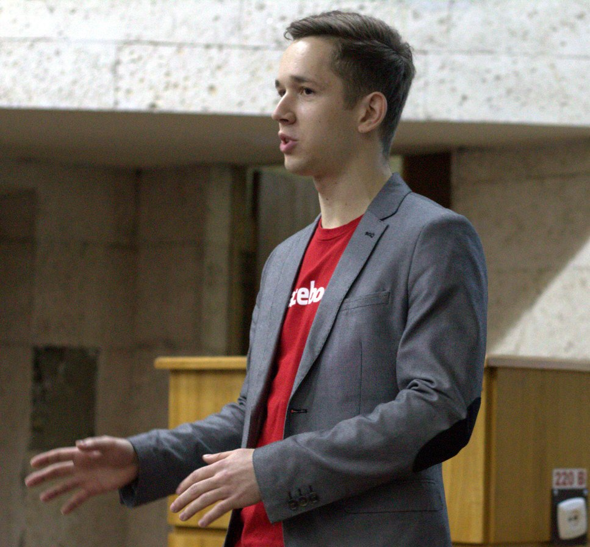

Anatolii Seleznov
Programmer, algorithms developer, IT enthusiast Software engineer at Facebook, London Taras Shevchenko National University of Kyiv BSc in Informatics, with honor, GPA 5.0. Github

Programmer, algorithms developer, IT enthusiast Software engineer at Facebook, London Taras Shevchenko National University of Kyiv BSc in Informatics, with honor, GPA 5.0. Github
App allows to split bill between roommates. It's great for students, who live in hostel by groups of 4 and more. You often buy some food for all or almost all roommates, and they can ask you to buy something for them. Money accounting get complicated here, because we tend to forget everything, but with this app it is a lot more easy.
Technologies: Java, REST, Jersey, Gson, Json, Maven, MySQL, Hibernate, Jax-WS, Android, OAuth2.0
A work of group of students that I was managing. Together we designed the architecture of model of the united
algorithmic environment (MUAE) for solving computational geometry problems.
The idea is to implement different geometry divide and conquer algorithms in one environment: with shared data structures, common preprocessing.
Library combines popular divide-and-conquer geometry algorithms, and store results of their computations in
special tree structure, so that they can be reused by other algorithms. So this design allows to save space and time.
Technologies: Java | Github
A social network for cycling tourists on the map. System was made from scratch. Features:
Technologies: PHP, MySQL, JavaScript, jQuery, Google Maps API, vkontakte API, HTML, CSS
A system for modeling and analyzing of fire spreading. Gives an opportunity to predict fire behavior and to make plan of fire fighting. Features:
Awards: second place on all-Ukrainian scientific competition of Minor Academy of Science; Technologies: C#, Windows Forms, GDI+, XML, Google Maps API, ADO, SQL Algorithms: Geometry, Polish notation
Developed web-site from sctratch.
Technologies: PHP, MySQL, HTML, CSS, javascript, jQuery, Photoshop